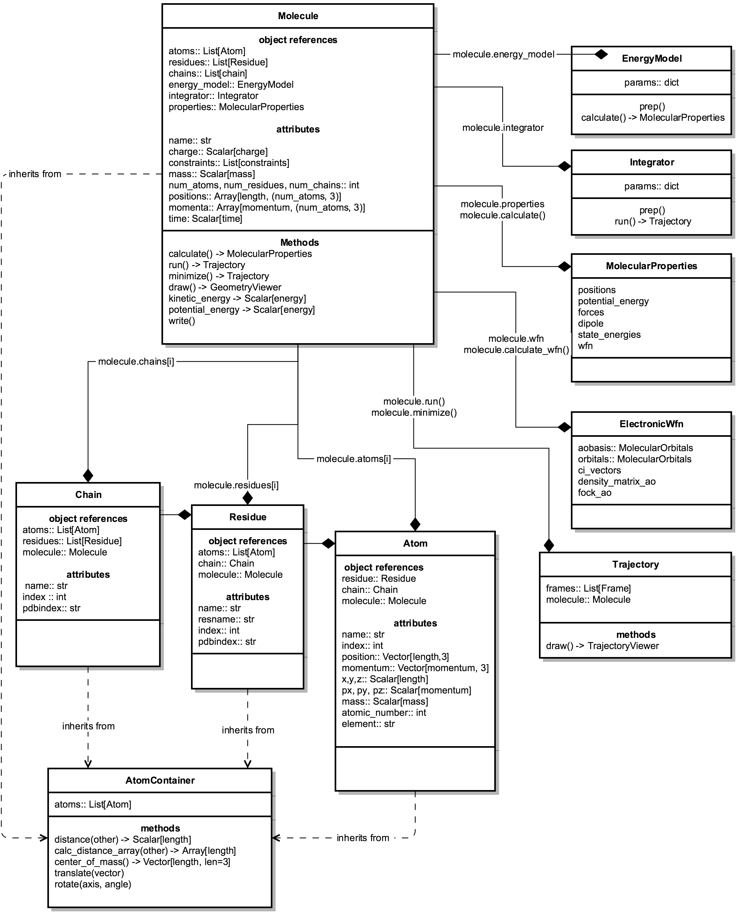

1. Molecular data model¶
1.1. UML Diagram¶
This diagram shows relationships between the major classes that have straightforward “physical” counterparts. Note that this is a high-level view, and many details are omitted for clarity.
1.2. Object ownership¶
Molecules are composed of many both “physical” objects, including Atoms, Residues, etc.; and computational objects such as EnergyModels, Integrators, etc.
Any object that is “owned” by a specific molecule will contain a reference to the molecule at object.molecule (e.g., atom.molecule, residue.molecule, energy_model.molecule).
1.3. Lists of molecular components¶
All molecules contain a list of atoms at mol.atoms. Each atom in this list stores its list index for easy retrieval:
>>> mol.atoms[42].index
42
>>> mol.atoms[0].index
0
These indices run from 0..(mol.num_atoms-1); the indices - and hence the order of the atoms - is stable unless the molecular structure is explicitly changed (for instance, an atom is deleted from the structure).
The same is true for the Residues at molecule.residues and Chains at molecule.chains.
Note that the index attributes DO NOT correspond to anything except order in a list. Structural metadata such as PDB atom index or residue sequence index are stored in the pdbindex attribute.
1.4. Building a molecule from scratch¶
Usually, you’ll build molecules either by reading them from files, or by using identifiers (PDB ids, SMILES, etc.). However, all molecule objects are initialized, with a list of atoms.
Note that, because of this, Atom-level information is considered the “source of truth”. MDT will build the molecule’s bond topology and primary structure from the atomic attributes– specifically, atom.bond_graph, atom.residue, atom.chain, etc. The children of primary structure objects will be rebuilt, and all indices will be reassigned.
1.5. Editing molecules¶
What if you want to edit a molecule’s toplogy? For instance, you might want to add a bond, or delete an atom, or change a carbon to a nitrogen.
There are a few different cases for this.
1.5.1. Non-destructive editing¶
Most MDT routines that modify a molecule’s topology - e.g., moldesign.add_hydrogen() - will return a copy of the molecule, leaving the original unchanged. When working interactively, this means that you can apply these methods without worrying about corrupting your original molecule.
1.5.2. Destructive editing¶
WIP
- Note:
This functionality is still very much in development, and you’ll need to proceed with caution; it’s definitely possible (and actually pretty easy) to put a molecule into an inconsistent state (e.g. where an atom in
some_residue.atoms, butatom.residue==some_other_residue).For now, the easiest way to make sure your data structures are consistent is to create working copy, edit atomic attributes, then build new molecules (see Building a molecule from scratch). For instance, let’s create an alkane, then add a new bond to it:
>>> mymol = mdt.from_smiles('CCCC') >>> tempmol = mdt.Molecule(mymol) >>> tempmol.atoms[0].bond_graph[tempmol.atoms[-1]] = 1 >>> edited_mol = mdt.Molecule(mymol)
This is admittedly hacky, and will be replaced with a more intuitive and pythonic system.